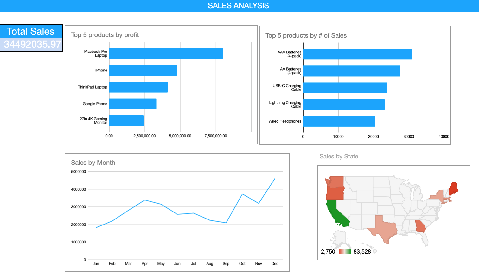
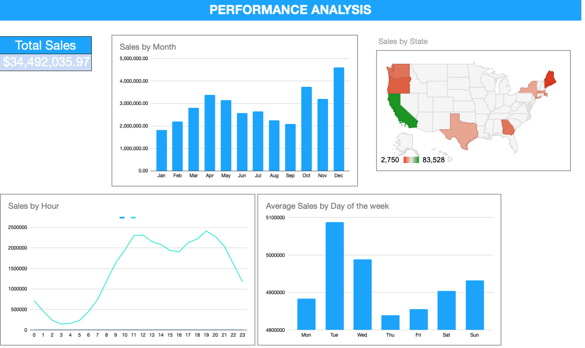

Image by Isaac Smith on Unsplash
Analysis of sales data in Google Sheets
An elaborate explorative and prescriptive analysis of anonymous store sales data from 2019 in the US using Sheets functions and BigQuery.Summary
The dataset explored contains over 180,000 records of sales of an anonymous electronics store in the US in 2019, operating in total of 8 states. Sales were analysed and evaluated based on state and time of the purchase. A key performance indicator is found to be likely to increase the store’s profits. The analysis is done exclusively in Google Sheets using Sheets functions and SQL (BigQuery) functions.
Questions
- Which products generate the highest profits?
- Which products are sold the most?
- Which months of 2019 have generated the highest profits?
- What’s the best time and day of the week to sell our products?
Data preparation
The input dataset is in .csv format. It contains 186,851 uncleaned rows, which were found to have duplicates and blank rows. After cleaning, 185,951 unique rows remain. Columns were reviewed for incorrect and missing values and those values were corrected. The Price Each column was found to have inconsistent data format (text, number), which was also fixed. Additional columns for city, state, time of the day, day of the week and month were created. While exploring the cleaned dataset, inconsistency of order dates versus order IDs was found, which will drive further analysis to be based on the dates of the sales.
Exploratory Analysis
The analysis was done using built-in Sheets functions (Excel functions), along with SQL (BigQuery) for data processing, in accordance to the initial questions.
Which products generate the highest profits?
- For this, all of the products were analysed with respect to the revenues.
Which products are sold the most?
- In this case, the products were analysed with respect to sold quantities.
Which months of 2019 have generated the highest profits?
- Sales were analysed based on months of the respective purchases.
What’s the best time and day of the week to sell our products?
- For this, the dataset was analysed with respect to the time and day of the week of the
purchase.
Visualization
After the exploratory analysis, two dashboards named Sales Overview and Performance Overview were created. The former shows the sales behaviour in a generalised way, while the latter is the result of the date and time analysis.

Conclusions
While the MacBook Pro is the least sold product, it still generates the highest revenue throughout 2019.
Times generating the highest revenue are at 12:00 and 19:00 on Tuesdays, while October and December have the best performance in terms of sales.
Prescriptive Analysis
After analysing sales of individual products, the MacBook Pro sales were found to bring the highest revenue. An increase in the marketing efforts of the product needs to be considered, as it would potentially lead to higher profits with a small bump in the sales. California was found to generate the most revenue among the 8 states the store operates in. Increasing marketing efforts in the state would potentially increase the sales, however, competition and market analysis need to be performed to define the best strategy.